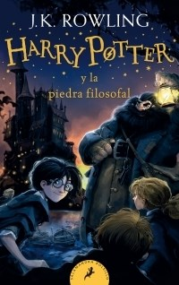
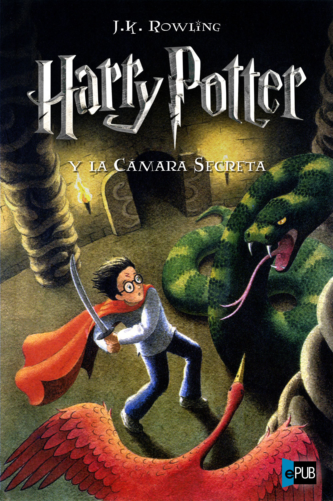
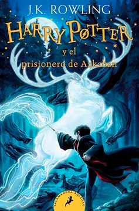
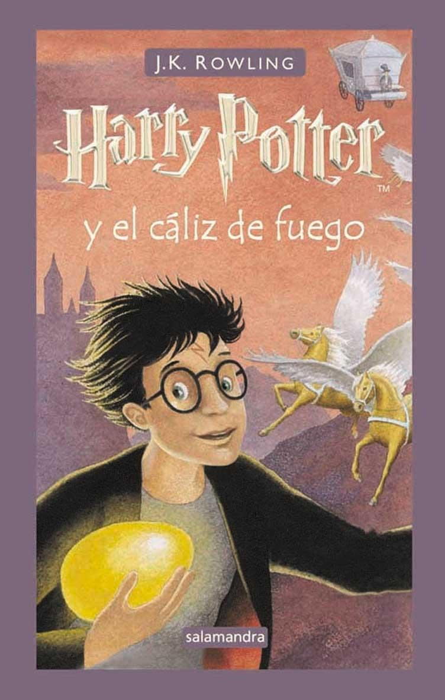
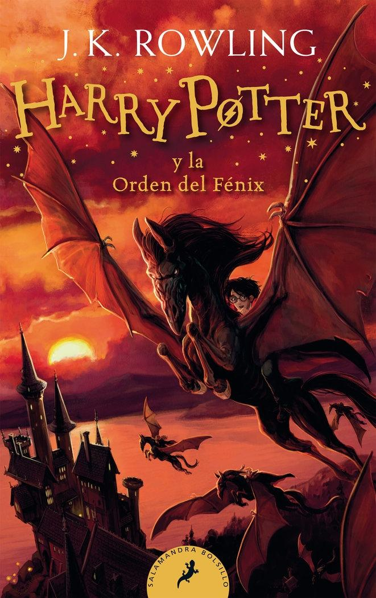
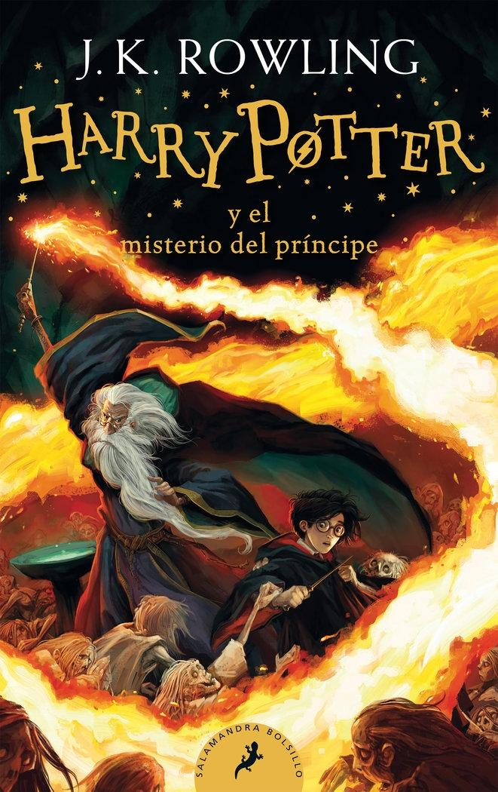
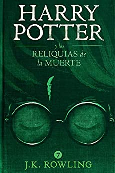

Harry Potter es una serie de novelas fantásticas escrita por la autora británica J. K. Rowling, en la que se describen las aventuras del joven aprendiz de magia y hechicería Harry Potter y sus amigos Hermione Granger y Ron Weasley, durante los años que pasan en el Colegio Hogwarts de Magia y Hechicería. El argumento se centra en la lucha entre Harry Potter y el malvado mago lord Voldemort, quien asesinó a los padres de Harry en su afán de conquistar el mundo mágico.
Desde el lanzamiento de la primera novela, Harry Potter y la piedra filosofal, en 1997, la serie logró una inmensa popularidad, críticas favorables y éxito comercial alrededor del mundo. Para julio de 2013 se habían vendido entre 400 y 450 millones de ejemplares de los siete libros, que los ubican como la serie de libros más vendida de la historia y los cuales han sido traducidos a más de 65 idiomas, entre los que se incluyen el latín y el griego antiguo. El séptimo y último libro, Harry Potter y las reliquias de la Muerte, fue lanzado mundialmente en inglés el 21 de julio de 2007, mientras que en español se publicó el 21 de febrero de 2008. Cabe aclarar que se sacaron a la venta 3 ediciones, (1ra en 1997, 2da y 3era en 2015) en caso de que todavía no leíste ninguno de los libros y quieres hacerlo, es recomendable leer los 7 libros de la misma edición, debido a que cada una narra las historias de diferentes formas. Esto lo aclaró la misma J.K. Rowling en una entrevista con un medio del Reino Unido en el año 2017.
Cabe aclarar que se sacaron a la venta 3 ediciones, (1ra en 1997, 2da y 3era en 2015) en caso de que todavía no leíste ninguno de los libros y quieres hacerlo, es recomendable leer los 7 libros de la misma edición, debido a que cada una narra las historias de diferentes formas. Esto lo aclaró la misma J.K. Rowling en una entrevista con un medio del Reino Unido en el año 2017. El éxito de las novelas ha hecho de la marca Harry Potter una de las más exitosas del mundo, con un valor de 15 000 millones de dólares,6 y a Rowling la primera escritora de la historia en alcanzar los 1 000 millones de dólares en concepto de ganancias gracias a su trabajo. En 2005, fue la novena persona con el ingreso anual más alto del mundo. En 1999, la productora de cine Warner Bros. adquirió los derechos para adaptar los siete libros a una serie de películas. La última de ellas, Harry Potter y las reliquias de la Muerte: parte 2, se estrenó el 15 de julio de 2011 y con ocho películas realizadas la serie se convirtió en una de las franquicias más exitosas del cine en concepto de recaudaciones en taquilla. Harry potter es un niño que llamó la atención varios niños adultos etc y por eso logró ser una de las mejores novelas.
LIBROS
Harry Potter y la piedra filosofal
Harry Potter y la piedra filosofal (Harry Potter and the Philosopher's Stone) es el primer libro de la serie, fue publicado en Reino Unido el 26 de junio de 1997 y en español en marzo de 1999. Se trata de uno de los libros más vendidos de la historia, las estimaciones de sus ventas mundiales superan los 400 millones de copias. En la primavera de 2007, una primera edición firmada por Rowling fue subastada en Londres por 27 876 libras esterlinas.
En esta primera obra se introducen la mayoría de los personajes principales de la serie, así como muchos de los lugares donde se desarrollará la acción. Se narran los primeros pasos de Harry en el mundo de la magia, así como su primer enfrentamiento con Voldemort, quien en su búsqueda de la inmortalidad quiere obtener el poder de la piedra filosofal.

Harry Potter y la cámara secreta
Harry Potter y la cámara secreta (Harry Potter and the Chamber of Secrets) fue publicado originalmente el 2 de julio de 1998, y en español en octubre de 1999. Muchos de los elementos del primer boceto de este libro fueron eliminados tanto por su autora como por el editor. Además, el libro tiene una importante relación temática con el sexto libro. Mucha de la información que iba a ser revelada en este tomo fue desplazada a la sexta entrega. Como consecuencia de esto, muchos de los elementos que aparecen en una forma cotidiana en La cámara secreta aparecen nuevamente en El misterio del príncipe con su verdadera relevancia. El libro relata el segundo año de Harry en Hogwarts. Un día un elfo llamado Dobby vino a casa de Harry para avisarle de que Hogwarts corría un grave peligro. Más tarde su amigo Ron, le recogerá en un coche volador y así empieza su curso en Hogwarts durante el cual aparecen mensajes en las paredes de los pasillos de la escuela que advierten que la Cámara de los Secretos ha sido abierta, seguidos de una serie de ataques a alumnos que no provienen de familias con sangre mágica. En esta entrega introducen la figura del elfo doméstico y personajes relevantes para el resto de la serie, como Lucius Malfoy, Ginny Weasley y Arthur Weasley, además de revelar un poco más del pasado de Voldemort a través de su diario personal. 
Harry Potter y el prisionero de Azkaban
Harry Potter y el prisionero de Azkaban (Harry Potter and the Prisoner of Azkaban) fue publicado en inglés el 8 de julio de 1999, mientras que en español lo hizo en abril de 2000.10 Este fue el libro que más rápido escribió Rowling, pues lo terminó en tan solo un año después de comenzar a escribirlo. Fue además acreedor del Premio Costa y del Premio Bram Stoker, entre otros, que lo ubican como uno de los libros fantásticos más laureados de los últimos años. En esta oportunidad se introducen la figura del dementor y los personajes de Remus Lupin y Sirius Black, quien al inicio de la novela escapa de la prisión de Azkaban, además de desarrollar la historia de los padres de Harry. Es el único libro de la serie en el que no aparece Voldemort. 
Harry Potter y el cáliz de fuego
Harry Potter y el cáliz de fuego (Harry Potter and the Goblet of Fire) fue publicado en inglés el 8 de julio de 2000 y en español en marzo de 2001. El tamaño del libro incrementó considerablemente respecto a los primeros tres, una idea de la que Rowling estaba al tanto desde la concepción de la novela. El título atravesó diversas modificaciones, entre las cuales se incluyeron Harry Potter y el Torneo Doomspeell, Harry Potter y el Torneo de los tres magos, hasta que la autora se inclinó por El cáliz de fuego pues recordaba al concepto de la «copa del destino», que de acuerdo a ella era el tema del libro.14 La novela fue ganadora del Premio Hugo a la mejor novela en 2001. En esta ocasión, se narra el cuarto año de Harry en Hogwarts y el misterio que rodea el ingreso involuntario de su nombre en el Torneo de los Tres Magos, en el cual es obligado a competir junto a otros tres participantes. La historia explora más a fondo el mundo mágico y termina con el resurgimiento de lord Voldemort. Previo a la publicación del libro, se generó mucha controversia y anticipación ante el anuncio de la autora de que un personaje moriría. 
Harry Potter y la Orden del Fénix
Harry Potter y la Orden del Fénix (Harry Potter and the Order of the Phoenix) es con casi 900 páginas en su edición inglesa16el libro más largo de la serie, un hecho que la propia autora considera un defecto. Fue publicado mundialmente en inglés el 21 de junio de 2003, y en español el 21 de febrero de 2004. La edición en español a cargo de Salamandra constó de tres versiones: una para España, otra para el cono sur y otra para Colombia, México y Estados Unidos. Esta distinción se hizo para respetar algunas particularidades del lenguaje regional.18 Su tirada inicial en español fue de 1 100 000 copias. En el quinto libro, Harry Potter debe enfrentarse tanto a un Voldemort resurgido como al resto del mundo mágico que se niega a creer que esto es cierto, empezando por el Ministerio de Magia. Este nombra a Dolores Umbridge como la nueva directora de Hogwarts, y junto con Luna Lovegood y Bellatrix Lestrange son los tres personajes más destacados que se introducen en esta entrega. Por otro lado, se revela una importante profecía que concierne a Harry y a Voldemort. 
Harry Potter y el misterio del príncipe
Harry Potter y el misterio del príncipe (Harry Potter and the Half-Blood Prince) fue publicado en inglés el 16 de julio de 2005 y fue presentado por Rowling en una rueda de prensa reservada solo a niños entre 8 y 16 años. Por su parte, en español fue publicado el 23 de febrero de 2006, con una tirada inicial de un millón de ejemplares. Casi un año antes de su publicación original, Rowling había manifestado en su sitio web oficial su voluntad de matar a otro personaje, por lo que se sucedieron una serie de apuestas no oficiales en las que se barajaron las posibilidades. En esta sexta entrega, Harry se topa con un antiguo libro de texto de pociones lleno de anotaciones y recomendaciones firmadas por un misterioso príncipe. Al mismo tiempo, recibe clases particulares por el propio director del colegio, Albus Dumbledore, que le hace conocer momentos del pasado de Voldemort, para así enseñarle lo que son los horrocruxes, objetos elementales para lograr su victoria. Al final del libro, el profesor Severus Snape, cuya lealtad estuvo en duda durante toda la serie, asesina a Dumbledore. La frase Snape kills Dumbledore (Snape mata a Dumbledore) se convirtió en un fenómeno de internet que impulsó todo tipo de videos y gráficos. 
Harry Potter y las reliquias de la Muerte
La séptima novela, Harry Potter y las reliquias de la Muerte (Harry Potter and the Deathly Hallows), fue publicada en inglés el 21 de julio de 2007, cerrando la serie que duró una década. En español fue publicado el 21 de febrero de 2008, con una tirada inicial de un millón y medio de ejemplares. El libro batió récords de venta, con más de 11 millones de copias vendidas en sus primeras 48 horas, solo en el Reino Unido y Estados Unidos. La marca anterior la tenía El misterio del príncipe. Esta última novela narra los acontecimientos que siguen directamente a la muerte de Dumbledore, en los que Voldemort finaliza su ascenso al poder y logra dominar el Ministerio de Magia. Harry y sus amigos deciden no asistir a su último año en Hogwarts, para salir en la búsqueda de los horrocruxes restantes. Finalmente, se lleva a cabo la batalla de Hogwarts, entre la Orden del Fénix, alumnos y profesores del colegio, por un lado, y Voldemort y los Mortífagos, por el otro. La novela finaliza con un epílogo que cuenta el futuro de los personajes supervivientes 19 años después del enfrentamiento, mostrando que cada uno de ellos ha formado sus vidas. El 23 de octubre de 2015, J. K. Rowling anunció una octava parte de la saga. 
PELICULAS
Harry Potter y la piedra filosofal (película)
Es una película británica-estadounidense de fantasía y aventuras basada en el libro homónimo de J. K. Rowling, dirigida por el cineasta Chris Columbus y estrenada en 2001. La historia sigue a Harry Potter, un niño que al cumplir once años descubre que es un mago, por lo cual es enviado al Colegio Hogwarts de Magia y Hechicería para comenzar su entrenamiento como tal.
Esta película marca el inicio de la saga de películas de Harry Potter que se extendió hasta 2011, con el estreno de Harry Potter y las Reliquias de la Muerte: parte 2; así como también es el comienzo del universo cinematográfico del mundo mágico, que para 2021 suma diez películas estrenadas y una en producción.
Harry Potter y la cámara secreta
La producción de Harry Potter y la cámara secreta comenzó el 19 de noviembre de 2001,3 solo tres días después del estreno de Harry Potter y la piedra filosofal. Las primeras tres semanas de rodaje consistieron principalmente en el trabajo de la segunda unidad de efectos especiales, en su mayoría las escenas del auto volador.4 La fotografía de primera unidad comenzó más tarde en Surrey, Inglaterra, en el número 4 de Privet Drive, Little Whinging, para las escenas que tomaron lugar en la casa de los Dursley. La filmación continuó en la Isla de Man y en varios lugares en Gran Bretaña; los Estudios de la Warner Bros. de Leavesden, en Londres, hizo varias escenas para Hogwarts. Otras escenas fueron rodadas en Inglaterra, incluyendo el Expreso de Hogwarts fijado en el Andén 9¾ de la Estación de King's Cross. Los famosos claustros de la Catedral de Gloucester en Inglaterra fueron usados como el escenario de Hogwarts.5 El rodaje concluyó en el verano de 2002,6 mientras que la película estuvo hasta principios de octubre con la posproducción.7 A diferencia de la fotografía de la primera entrega, el director Chris Columbus optó por cámaras de mano para Harry Potter y la cámara secreta para permitir más libertad en el movimiento.
Harry Potter y el prisionero de Azkaban
El rodaje de la cinta comenzó oficialmente el 24 de febrero de 2003 en los estudios Leavesden, ya que el 18 del mismo mes había comenzado la filmación en los decorados que representaban la calle Magnolia de la localidad ficticia de Little Whinging. El rodaje culminó el 28 de noviembre de 2003 y entonces la película entró en etapa de posproducción. Por otro lado, una huelga de trabajadores amenazó con parar el rodaje a finales de marzo.
El hipopótamo pigmeo fue uno de los múltiples animales utilizados en la película.
Para lograrla se debió planificar una complicada coreografía automovilística con especialistas y los supervisores de efectos visuales se encargaron de fabricar el autobús púrpura de tres pisos. Para dar la impresión de que el vehículo se desplazaba a gran velocidad, los automóviles que circulaban en torno al mismo no debían superar los 13 km/h mientras que el autobús se desplazaba a 50 por las calles londinenses. Durante el rodaje de la película se utilizó una gran variedad de animales para poblar el universo ideado por J. Uno de los animales más exóticos utilizados fue una hipopótamo pigmeo, la cual habitaba en la ficción una de las pinturas móviles de Hogwarts en la que se refugia la Dama Gorda.
Harry Potter y el cáliz de fuego
Harry Potter y el cáliz de fuego (título original en inglés, Harry Potter and the Goblet of Fire) es la cuarta película de la serie de películas de Harry Potter y de la franquicia Wizarding World. Fue dirigida por el realizador inglés Mike Newell y estrenada el 18 de noviembre de 2005. Esta película fue la primera en recibir la clasificación PG-13 por contener escenas de violencia y terror.
La película obtuvo $896 millones de dólares, siendo la película del 2005 con más ganancias, recibió un premio BAFTA en la categoría Mejor Diseño de Producción, y una nominación a un premio Óscar en la categoría Mejor Dirección Artística, y obtuvo un récord Guinness por ser el DVD que se ha vendido más rápido.
Harry Potter y la Orden del Fénix
Harry Potter y la Orden del Fénix (título original en inglés, Harry Potter and the Order of the Phoenix) es el quinto largometraje de la serie de películas Harry Potter y de la franquicia Wizarding World, basado en la novela homónima de la escritora británica J. K. Rowling. La película fue dirigida por David Yates, y contó con Michael Goldenberg como guionista en reemplazo de Steve Kloves, quien realizó idéntica labor en las cuatro primeras películas.
El primer tráiler fue estrenado el 17 de noviembre de 2006, antes de la película animada de Warner Bros. Happy Feet. A pesar de que el estreno de la película estaba previsto en un primer momento para el 13 de julio de 2007 en América del Norte, luego fue adelantado para el día 12 de julio a nivel mundial, tanto en cines normales como en cines IMAX.
La duración de la película es de 138 minutos (2 horas y 18 minutos), convirtiéndose en la segunda película más corta de la saga, ya que Harry Potter y las Reliquias de la Muerte: parte 2 tiene una duración de 130 minutos (2 horas y 10 minutos), siendo esta última la más breve de toda la saga. La duración de esta película es irónica, ya que el libro en que está basada, Harry Potter y la Orden del Fénix, es el más largo de la serie de libros.
La película recaudó un total de casi 940 millones de dólares, convirtiéndose así en la cuarta película de Harry Potter más taquillera, siendo superada por la octava, la primera, y la séptima. Es la vigesimosexta película más taquillera de la historia.
Nicholas Hooper, como es habitual en los trabajos de Yates, fue el encargado de la banda sonora mientras que John Williams y Patrick Doyle habían ocupado ese puesto en las películas anteriores. Completan los rubros técnicos el diseñador de producción Stuart Craig (ganador de dos premios Óscar) y el fotógrafo Slawomir Idziak en la dirección de fotografía de la cinta.
Harry Potter y el misterio del príncipe
Harry Potter y el misterio del príncipe es la sexta película de la saga de Harry Potter y de la franquicia Wizarding World. El director de la cinta fue nuevamente David Yates, director del largometraje anterior y de las dos películas restantes de la serie. Se estrenó mundialmente el 15 de julio de 2009. La cinta es una adaptación de la novela homónima de la escritora británica J. La película fue nominada a un Óscar a la mejor fotografía. Debido a la creciente amenaza de Voldemort y los suyos, Albus Dumbledore decide impartir lecciones privadas a Harry y así prepararlo para la confrontación final con el lado oscuro.
Algunos han señalado paralelismos entre el clima de terror que vive la comunidad mágica en la película y la situación del mundo real. El guion de la cinta estuvo a cargo de Steve Kloves, quien retomó su puesto tras no haber participado en la realización de la película predecesora. en 2008, The Dark Knight, la productora decidió desplazar el estreno de El misterio del príncipe al año siguiente para asegurarse la recaudación de dicho año. Esta decisión generó el descontento de muchos de los seguidores de la saga pero, no obstante, el filme consiguió recaudar lo suficiente como para colocarse entre las películas más exitosas del año.
En los países hispanohablantes, el título de la película fue alterado para coincidir con el que la editorial Salamandra había titulado la novela para la edición en español. El original –Harry Potter and the Half-Blood Prince, que se traduciría como «Harry Potter y el príncipe mestizo» fue traducido como Harry Potter y el misterio del príncipe. También en algunos países de Hispanoamérica, como es el caso de Argentina, la distribución, el estreno y las recaudaciones de las películas se vieron afectadas por la epidemia de la gripe H1N1. David Yates repite como director tras dirigir la quinta entrega, mientras que David Heyman y David Barron son los productores.
El rodaje comenzó el 17 de septiembre de 2007 y finalizó el 17 de mayo de 2008. Como las películas anteriores, se estrenó a la vez en salas de cine tanto convencionales como IMAX 3-D.
Harry Potter y las reliquias de la Muerte
PARTE 1
Harry Potter y las Reliquias de la Muerte: parte 1 (título original en inglés: Harry Potter and the Deathly Hallows - Part 1) es una película de fantasía y acción dirigida por David Yates. Es la primera de dos partes cinematográficas basada en la novela homónima de J. K. Rowling y la séptima película de la franquicia Wizarding World y de las películas de Harry Potter. Fue estrenada el 19 de noviembre de 2010 en 2D y en formato IMAX (en un principio se anunció su estreno en formato 3D, pero semanas antes del estreno de la película se procedió a cancelar dicha presentación). Este largometraje recibió nominaciones a varios premios, entre los que destacan los Premios Óscar.
La duración total de las películas es de 276 minutos (4 horas 36 minutos), correspondiendo a la Parte 1 los primeros 146 minutos (2 horas 26 minutos).
PARTE 2
Harry Potter y las Reliquias de la Muerte: parte 2 (título original en inglés: Harry Potter and the Deathly Hallows - Part 2) es una película de acción y fantasía dirigida por David Yates. Es la segunda de dos partes cinematográficas basada en la novela homónima de J. K. Rowling, la octava película de la franquicia Wizarding World y la última entrega de las películas de Harry Potter. El guion estuvo a cargo de Steve Kloves y fue producida por David Heyman, David Barron y Rowling. Fue estrenada en la mayor parte del mundo el 15 de julio de 2011, pero en algunos países su estreno fue adelantado un día, mientras que en China no se estrenó hasta el 4 de agosto de 2011. La película fue convertida totalmente al formato 3D y fue presentada en dicho formato y también en 2D y IMAX. Este largometraje recibió tres nominaciones a los Premios Óscar: mejor dirección artística, mejor maquillaje y mejores efectos visuales. Se posicionó como la tercera película con mayor recaudación en la historia consiguiendo 1341 millones, siendo posteriormente superada por The Avengers (2012, 1511 millones).
La duración total de la película es de 276 minutos (4 horas 36 minutos), siendo este episodio los restantes 130 minutos (2 horas 10 minutos), además de ser el de la duración más corta de toda la saga.
VIDEOS
DETRAS DE CAMARAS DE LA PELICULA HARRY POTTER Y LA PIEDRA FILOSOFAL
DETRAS DE CAMARAS DE LA PELICULA HARRY POTTER Y LA CAMARA SECRETA
DETRAS DE CAMARAS DE LA PELICULA HARRY POTTER Y EL PRISIONERO DE AZKABAN
DETRAS DE CAMARAS DE LA PELICULA HARRY POTTER Y EL CÁLIZ DE FUEGO
DETRAS DE CAMARAS DE LA PELICULA HARRY POTTER Y LA ORDEN DEL FÉNIX
DETRAS DE CAMARAS DE LA PELICULA HARRY POTTER Y EL MISTERIO DE PRÍNCIPE
DETRAS DE CAMARAS DE LA PELICULA HARRY POTTER Y LAS RELIQUIAS DE LA MUERTE
ELENCO
PODEMOS VER EL ELENCO QUE CONFORMO LA PELICULA DE HARRY POTTER
"HARRY POTTER"

"HERMIONE GRANGER"

"RON WEASLEY"

"FRED WEASLEY"

"GINNY WEASLEY"

"GEORGE WEASLEY"

"ALBUS DUMBLEDORE"

"LORD VOLDEMORT"

"DRACO MALFOY"

"SEVERUS SNAPE"

"SIRIUS BLACK"

"RUBEUS HAGRID"

"MINERVA MCGONAGALL"

"LUCIUS MALFOY"

"DOLORES UMBRIDGE"